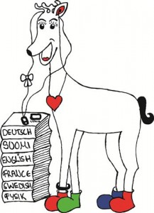
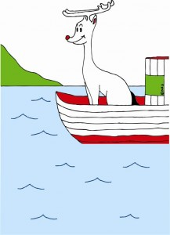

.
Finnish nature, fun and entertainment &
Meeting of the European Board
.
Meeting of the European Board
Kauppaseura, Mestarikabinetti, 4th Floor
(Please, ring the doorbell)
Aleksis Kiven katu 15, Tampere
(close to the Laukontori harbor)
From 10:00 a.m. to 02:00 p.m.
.
 On this Tuesday morning the representatives or the presidents from the board of the European Tall Clubs will have their important yearly meeting. The meeting is public and all other tall people are also welcome. The meeting will start at 10:00 a.m. and end about 02:00 p.m. Free table water, coffee or tea is included. If wanted, a lunch buffet may be bought/ordered for a small price of 8.00 Euro. Because of the limited space (50 people) of the meeting room, we kindly ask you to check the box of the participation choice and for the lunch buffet on the registration form. For all others, this morning is some free time of your own.
.
.
On this Tuesday morning the representatives or the presidents from the board of the European Tall Clubs will have their important yearly meeting. The meeting is public and all other tall people are also welcome. The meeting will start at 10:00 a.m. and end about 02:00 p.m. Free table water, coffee or tea is included. If wanted, a lunch buffet may be bought/ordered for a small price of 8.00 Euro. Because of the limited space (50 people) of the meeting room, we kindly ask you to check the box of the participation choice and for the lunch buffet on the registration form. For all others, this morning is some free time of your own.
.
.
Young & Tall – Trip to the Särkänniemi Adventure Park
Särkänniemi
Laiturikatu 1, Tampere
From 11:00 a.m. to- 02:00 p.m.
Appr. 35 Euro *
Young & Tall people and all the other interested tall guests will have an awesome time, when joining the adventure of visiting Särkänniemi, the most popular Amusement Park in Finland. There are a lot of activities for the whole family, i.e. an Aquarium; a Planetarium, the Sara Hilden Art Museum (modern); a Dolphinarium; various rides; a children´s Zoo and Cafés & Restaurants. You could also go up on Tampere’s famous symbol, the Näsinneula tower, which is the tallest observation tower in the Nordic countries. There, you can experience a breath-taking view over the city with the two big lakes. . If any friends from the Young & Tall group or others need any assistance for the round trip bus tour, we should meet before at 10:45 a.m.at the Keskustori marketplace, next to the fountain. Or later at the entrance of Särkänniemi Park at 11:00 a.m. with all others. It is easy to reach by the Public Transport bus number 4 which runs from the Tampere bus station to Särkänniemi via the railway station and Keskustori. After having an awesome time we will all meet again at the entrance at 02:00 p.m. to go back by bus. The bus-ticket one way is 2.50 Euro. *Payment at the entrance! . .Finnish nature, fun and entertainment
Viikinsaari Island
Departures: Laukontori harbor & the pier of the Scandic Rosendahl hotel
03:00 p.m. – Midnight
40 Euro
Our boats will depart from the Laukontori harbor or will pick us up at the pier of the Scandic Rosendahl hotel of Lake Pyhäjärvi at 03:00 p.m. After cruising on a part of the big Lake Pyhäjärvi, we will then arrive about one hour later at the Viikinsaari Island. This island is very popular among Finnish people from Tampere and vicinity. Being one of the typical thousands of islands in Finland, it has been turned into a big recreational island over the last years. It offers a wooden dance floor, sports fields, a lakeside sauna, an outdoor stage, nature trails and playgrounds. Surrounded by clear water and in the middle of nature, we will have a wonderful and relaxing time. You may lay on one of the sandy beaches, go swimming or walk through the forest of this island. . There are many options to participate in outside games. Some are of your free choice and some will be organized by the ET team, if you are interested. (We hope you are!) It will be a lot of fun for everybody. Let us surprise you! Dinner is included in the price and will be served at 08:00 p.m. in the nice Finnish style restaurant. A kiosk also exists for you to buy any additional small snacks or beverages. There will be music and dancing for everybody until the late evening as well. Our boat will go back to the Laukontori harbor via the Scandic Rosendahl hotel in Tampere at 11:30 p.m., come back, and go again for the last trip back at 00:30 a.m..
Dress Code: Casual or sporty clothes are recommended and, maybe some rain protection (jacket & cap) – just in case!